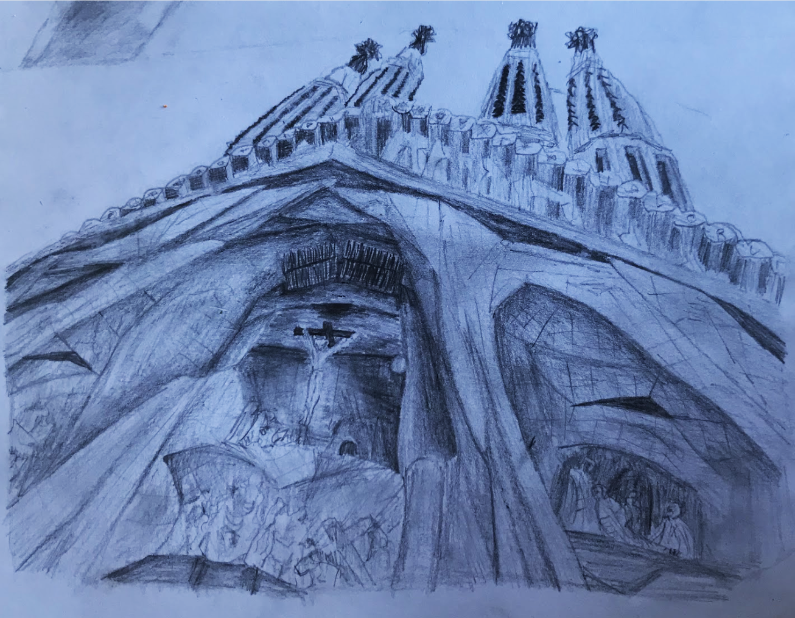
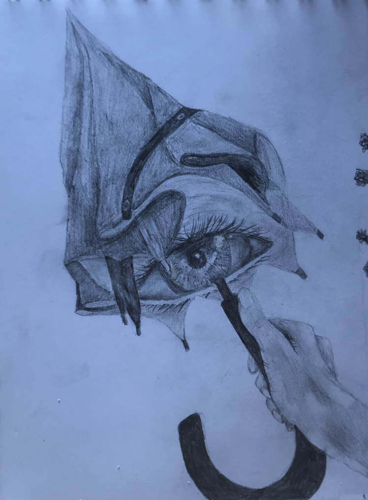
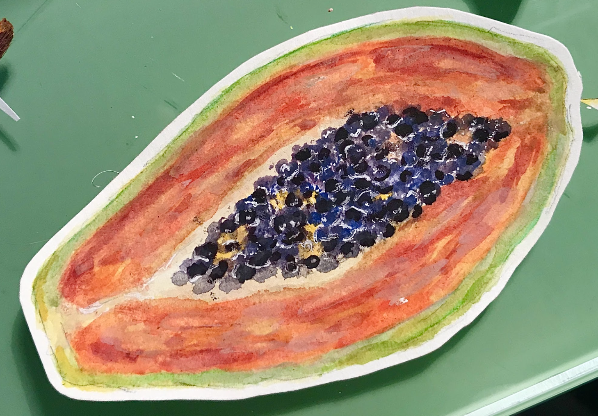
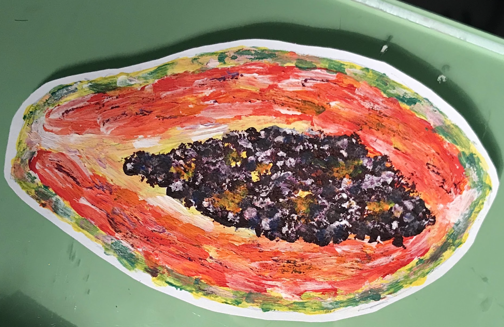

🎨Obras de 2020🎨


"Sagrada Familia" - Dibujo en grafito sobre papel de la Sagrada Familia.
Realizado a partir de una fotografía.

"Mirada bajo la lluvia" - Dibujo en grafito sobre papel
Realizado a partir de una fotografía.


"Papayas" - Una exploración de la papaya a través de acuarela (izquierda) y acrílico (derecha)
Estudios realizados con diferentes medios artísticos.